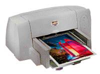

Принтер (printer) — наиболее
широко используемое устройство вывода данных.

Классификация
По способу
формирования страницы все печатающие устройства подразделяют на последовательные,
строчные и страничные. Последовательные печатают символ за символом, строчные
– сразу всю строку, страничные – сразу всю страницу.
По
механизму печати выделяют принтеры ударного (impact) и безударного
(non-impact) действия.
По
способу формирования символа принтеры бывают матричные и символьные.
Наконец,
рассматривают типы принтеров по используемой технологии печати.